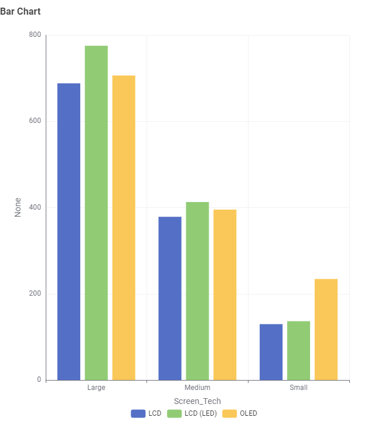

Storyboard 2
Question Statement
How does screen type affect energy consumption in televisions.
Storyboard
Issue
The LCD(LED) Screens in larger screened televisions have a higher energy consumption whilst the OLED type of screen has a higher energy consumption in smaller sized screens.
Demonstrate the Issue
Show the surveyed energy consumption of different tv screen sizes over the course of a few weeks.
Ideas for Overcoming
Reccommend users to select a television with a screen size that is appropriate to their needs while also considering their energy consumption and efficiency.
Describe the idea
Have salespeoples and manufacturers reccomend that consumers take into account the different energy consumptions and efficiencies of different screen sizes, IE if they live alone, they do not need a LARGE sized screen which will take more energy.
Show data from Before and after the Idea
Display Data from the energy company for different households total show the changes in energy consumption.
Recommendations
Inform friends and family members to buy responsibily due to the different energy consumption levels of different televisions.
Bar Chart
Bar Chart
